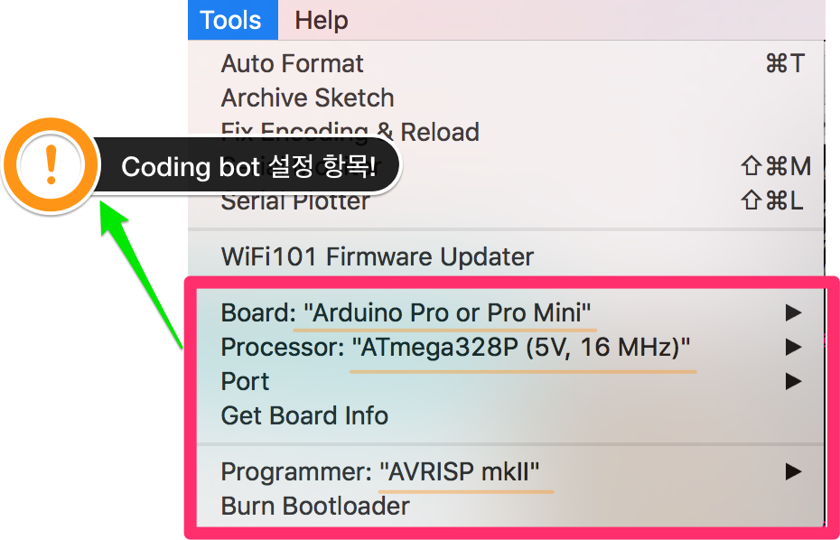
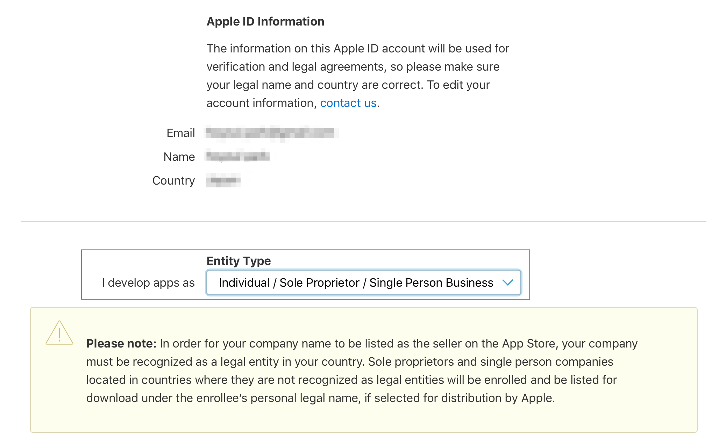
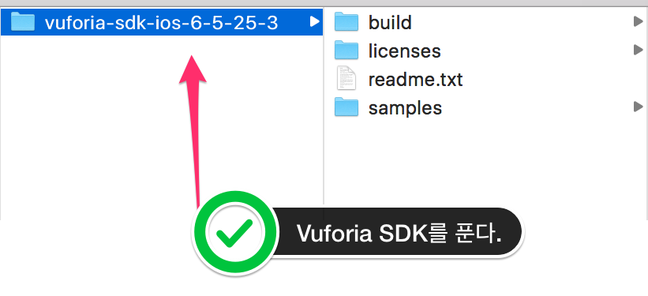
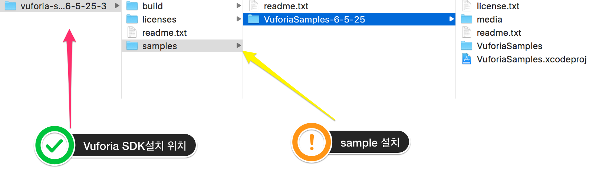
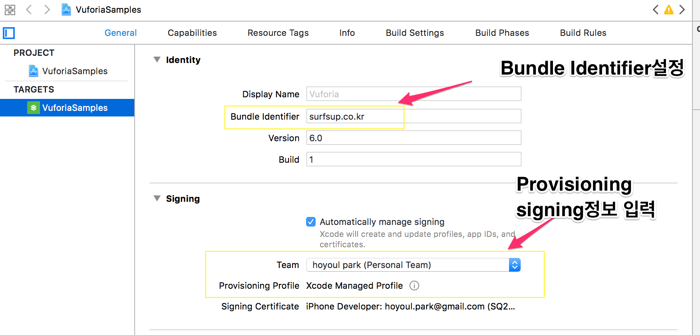
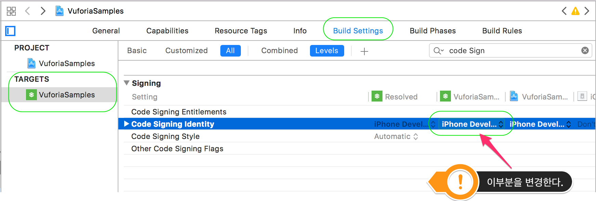
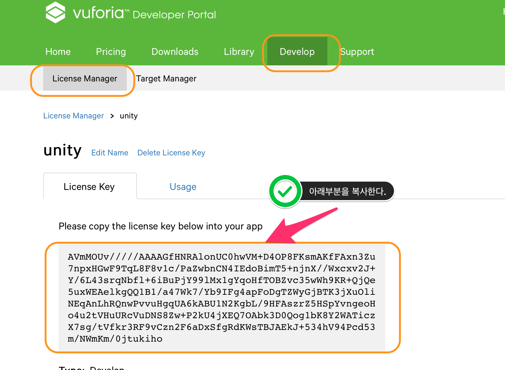
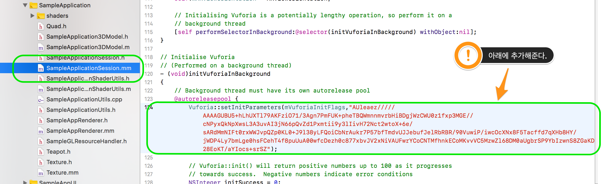

Roboprime
Table of Contents
이 page는 robo prime page로 옮겨져야 하나, Roboprime web page는 cafe24에서 관리하고 있는데, 저장공간 부족이라는 메시지로 file생성과 directory생성이 되지 않고 있고, 되더라도 직접 URL접근이 안되게 했기 때문에 cafe24관리자에게 요청해야 하는 상황입니다.
1 S/W list 조사
1.1 Scratch
| 이름 | 버전 | 제조사 | 다운로드경로 | 프로그램 간략 설명 |
|---|---|---|---|---|
| Scratch | 2.0 | MIT | web editor: https://scratch.mit.edu | - web editor |
| off-editor: https://scratch.mit.edu/download | - offline editor |
1.2 Arduino
| 이름 | 버전 | 제조사 | 다운로드경로 | 프로그램 간략 설명 |
|---|---|---|---|---|
| Arduino IDE | 1.8.5 | Arduino | https://www.arduino.cc/en/Main/Software | - arduino IDE |
arduino IDE는 arduino sketch라고 부르기도 하는듯. homepage에서는 Arduino IDE라고 명시되어 있음. IDE는 말그대로, editing과 compiling을 지원함.
1.3 AR
| 이름 | 버전 | 제조사 | 다운로드경로 | 프로그램 간략 설명 |
|---|---|---|---|---|
| Xcode | 9 | Apple | https://developer.apple.com/xcode/ | - swift or objectX IDE |
| ARKit | Apple | https://developer.apple.com/arkit/ | - AR Framework. | |
| Android Studio | 2.3 | https://developer.android.com/studio/index.html | - android deveopment IDE | |
| ARCore | https://developers.google.com/ar/develop/downloads | - AR Framework |
- ARkit/supported device
iPhone 6s and 6s Plus
iPhone 7 and 7 Plus
iPhone SE//
iPad Pro (9.7, 10.5 or 12.9) – both first-gen and 2nd-gen
iPad (2017)
iPhone 8 and 8 Plus
iPhone X
- ARcore/supported device
Google Pixel, Pixel XL, Pixel 2, Pixel 2 XL
Samsung Galaxy S8 (SM-G950U, SM-G950N, SM-G950F, SM-G950FD, SM-G950W, SM-G950U1)
3 coding bot 설정
3.1 device 설정

3.2 port 설정
arduino pro mini는 usb가 없다. 가상 usb를 위해 아래 파일을 각각의 develop meachine에 설치한다.
- windows: driver for windowsOS
- Mac: driver for macOS
3.3 실행
port와 device설정이 끝나고 source를 coding bot에 download해서 실행하면 된다. downlaod명령은 coding bot이 전원이 들어온 상태에서 실행하면 된다.
4 vuforia/ios 설정
vuforia는 Qualcomm에서 제공하는 AR SDK의 이름이다. vuforia sdk를 다운받아서 sample을 동작시키는것을 목표로 한다.
4.1 Become an iOS developer
IOS app을 만들려면, 맥북과 등록된 apple ID가 필요하다. IOS Developer Program에 등록해야만 개발이 가능하다. 여기서 등록이 가능하다. 등록화면은 다음과 같다.  계속 진행을 하면 IOS developer로 등록이 된다.
4.2 Install XCode and the iOS SDK
Xcode는 최신버전을 설치하면 된다.Xcode가 설치되면 IOS SDK는 Xcode에 포함되어 있기 때문에 자동으로 설치된다. Xcode 다운로드는 apple사이트에서 다운받을 수 있다. 경로: https://developer.apple.com/download/
4.3 Set up a Provisioning Profile
provision이란 단어는 미국에선 일상적으로 쓰이지만, 한국에서는 좀 낯설은 단어다. 사전적의미는 provide나 support하는 행위를 말하지만, 등록하는 행위를 말할때 쓰인다. 예를 들어, 회사의 infra system에 등록했을때, your ID provisioning했다고 말하기도 한다. 여기선 apple 개발자로 등록된 profile을 말한다. 이 profile을 설정해야만 IOS개발이 가능하다. profile에는 다음과 같은것이 있다.
- Obtain a certificate: 인증서를 가진자. 사용자의 Identity를 나타낸다.
- Assign a device: 개발할 device를 말한다.
- Create an App ID: 사용자.
provisioning profile 설정방법은 인터넷에 많기 때문에 여기서는 이미 setup이 되어있다고 가정한다.
4.4 vuforia sdk설치
vuforia sdk( https://developer.vuforia.com/downloads/sdk)를 다운받는다. 
4.5 vuforia example설치
vuforia에서 제공하는 sample을 ( https://developer.vuforia.com/downloads/samples) 다운 받는다. SDK 내에 설치한다. 설치한 후 화면은 아래와 같다. 
4.6 bundle identifier설정 on xcode
bundle identifier는 apple developer등록시에 설정한 값이다. Provisioning signing도 입력을 같이 해준다. 
4.7 code signing설정
vuforia code signing을 설정해야 한다. 
4.8 build & run
iphone을 연결한 상태에서 build와 run하면 phone에 sample이 설치된다. 설치된
app을 테스트하는 것은 sample폴더의 /Media/ImageTarget/의 jpg를 띄운 후 확인해
본다.
image: 여기
4.9 Trouble shooting
app이 설치는 되었지만, 실행시에 오류가 날수 있다. missing key라고 시작되는
경고 메시지를 보게 된다면, vuforia License key를 직접 입력 한다.
vuforia License key는 vuforia webpage에서 찾을 수 있다.

여기서 복사한 key를 아래 소스에 추가해준다.
